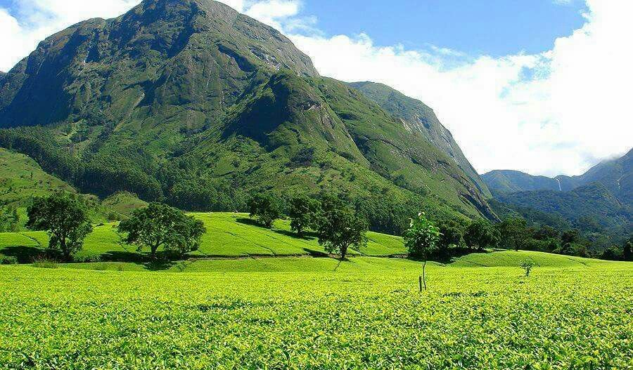
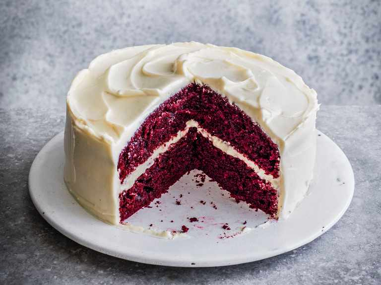

A mum to a beautiful and energetic 6 year old boy.I was born and raised in a small Southern African country Known as Malawi. I am the last born and only sister to 2 brothers. I moved to the UK more than 15 years ago and I have been living in the UK ever since. I studied Accounting and Finance at the University of Birmingham. I have worked as an Administrator for more than 7 years in the property industry, nursing home industry, and security industry. I love travelling and if possible I would love to travel around the world.

I love learning new things and challenges, during the lockdown out of boredom I challenged myself to bake a red velvet cake. So I consulted YouTube for a yummy recipe and my quest for baking a red velvet cake began. Alas! to my dismay the outcome of my quest was not as I had visualised, what I produced at the end of my quest was nothing resembling a red velvet cake even though I followed the YouTube recipe to a t. Why did the YouTube lady made it seem so easy and straight forward? Or is it my baking skills that are lacking? Oh well, at least I tried and I will continue to do so until perfection is achieved.

Later on I decided to challenge myself again since there was not much to do, apart from playing Minecraft with a 6 year old. This time I decided to explore the world of coding, after all what do I know about computer coding when I don’t even understand Minecraft and my 6 year old has to explain to me each time he decides that we should play Minecraft together. So I signed up with Code Nation and after all what’s the worst that could happen? I mean we designed a python game yes it was a simple game but for me it was a great achievement considering 2 weeks before the only python I knew was a snake. Today here I am designing a website, using Trello and throwing in words like KANBAN, HTML, frontend language, how cool is that!!!